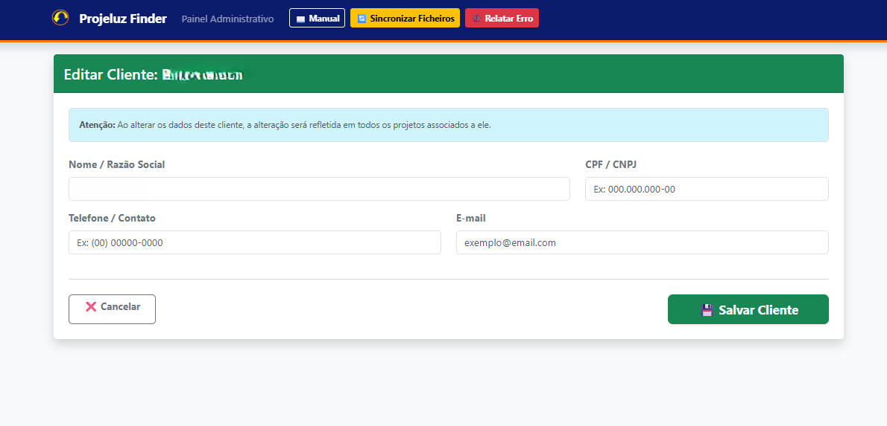
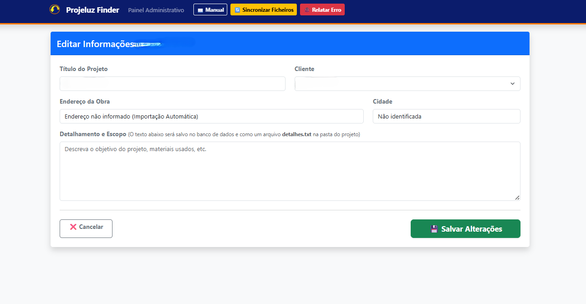
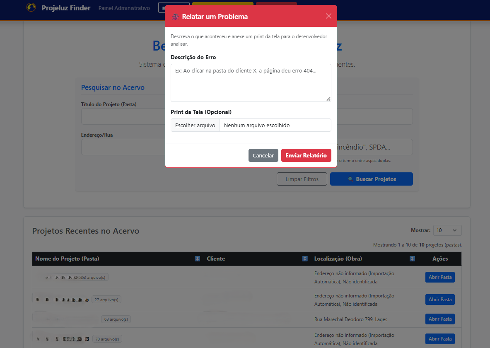

FOLHA Nº 01 — DETALHES DO PROJETO
Projeluz Finder
Intranet e Motor de Busca Técnico
Sistema que automatiza a indexação e a pesquisa de acervos técnicos de engenharia — varrendo pastas descentralizadas e entregando uma busca em milissegundos.
FOLHA Nº 02 — O DESAFIO
A agulha no palheiro de arquivos
Escritórios de engenharia geram um volume massivo de dados diariamente: projetos em CAD, relatórios em PDF, plantas e fichas de especificações. Com o passar dos anos, esses arquivos acabam espalhados por diversas pastas e subpastas de rede.
O desafio era eliminar o tempo morto que a equipe perdia navegando manualmente entre pastas tentando encontrar projetos antigos para referência, sem precisar migrar todos os arquivos para um sistema em nuvem complexo e caro.
FOLHA Nº 03 — A SOLUÇÃO
Interface e Funcionalidades
Desenvolvi um motor que varre ativamente as pastas de rede mapeadas e centraliza tudo em uma interface web leve e intuitiva, projetada para uso ágil no desktop.
Index (Buscador)
A "porta de entrada" do sistema. Exibe a listagem completa dos projetos com uma barra de busca inteligente e filtros avançados para localizar obras por cliente, título, endereço ou detalhes técnicos.
Detalhamento (Ficha Técnica)
Exibe todos os dados estruturados do cliente e a lista paginada de arquivos (PDFs, CADs, imagens) vinculados ao projeto. Permite a visualização rápida ou o download direto dos documentos mapeados na rede local.

Atualização de Cliente
Formulário para atualizar as informações cadastrais (nome, CNPJ, telefone, e-mail). Ao salvar, o sistema localiza e atualiza automaticamente os arquivos de backup de todos os projetos vinculados a este cliente.

Sincronização de Projeto
Página para atualizar os dados da obra (título, endereço, escopo). O sistema garante que as alterações feitas na web sejam espelhadas fisicamente nos arquivos de texto e JSON nativos nas pastas do Windows.

Report de Erro e Suporte
Canal direto de suporte via e-mail integrado ao sistema. Permite que o usuário descreva problemas operacionais e anexe capturas de tela, fornecendo feedback visual de processamento em tempo real enquanto notifica o desenvolvedor.
FOLHA Nº 04 — ARQUITETURA
Bastidores Técnicos
A solução roda diretamente nos servidores locais do cliente. Utilizando scripts Python, as rotinas fazem o parser de arquivos de forma otimizada (sem sobrecarregar a leitura do disco rígido), além de realizar operações de I/O em arquivos de texto e JSON, mantendo a integridade dos dados entre a interface web e o sistema operacional Windows.
- Python
- Automação de Tarefas
- Manipulação de Sistema de Arquivos (I/O)
- Web Interface (Intranet)